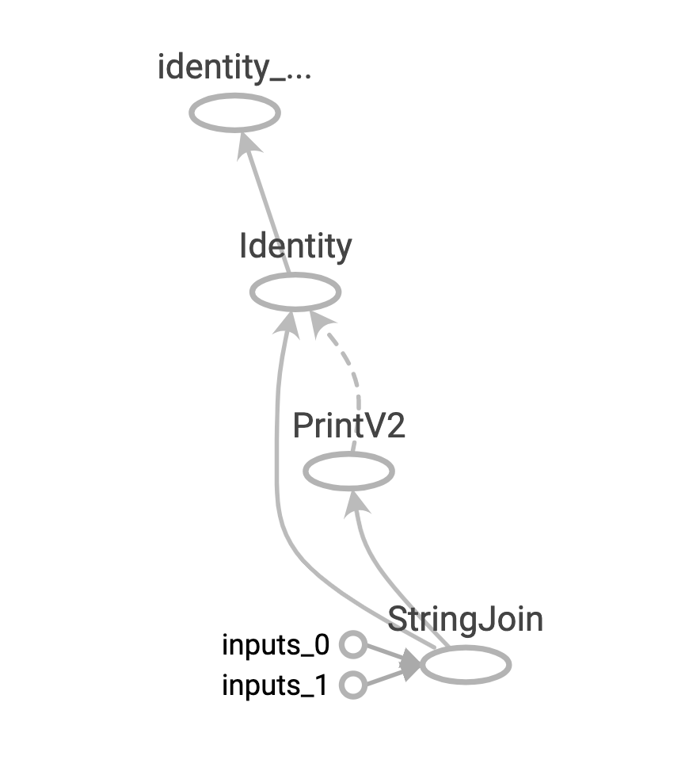

在TensorFlow1.x的时代, 采用的是静态计算图, 需要首先使用TensorFlow的各种算子创建计算图, 然后再开启一个会话Session, 显式执行计算图. 在静态图构建完成之后, 几乎全在TensorFlow内核上使用C++代码执行, 效率较高. 此外静态图还会对计算步骤进行一定的优化, 略去和结果无关的步骤.
而在TensorFlow2.x时代, 使用的是动态计算图, 即每使用一个算子后, 该算子都会被动态地加入到隐含的默认计算图中, 立即执行得到结果, 而无需开启Session. 使用动态计算图即Eager Excution的好处是方便调试程序, 它会让TensorFlow代码的表现和Python原生代码的表现一样, 写起来就像写numpy一样, 各种日志打印, 控制流全部都是可以使用. 不过动态图的缺点是运行效率会相对低一些, 因为使用动态图会有许多次Python进程和TensorFlow的C++进程之间的通信.
如果需要在TensorFlow2.x中使用静态图, 可以使用@tf.function装饰器将普通Python函数转换成对应的TensorFlow计算图构建代码. 运行该函数就相当于在TensorFlow1.x中用Session执行代码. 使用tf.function构建静态图的方式叫做 Autograph.
在TensorFlow2.x中, 有三种计算图的构建方式: 静态计算图, 动态计算图, 以及Autograph.
计算图简介
计算图由节点(nodes)和边(edges)组成. 节点表示操作符Operator, 或者称之为算子, 边表示算子之间的依赖关系.
实线表示有数据传递, 即张量. 虚线表示控制依赖, 即先后顺序.

静态计算图
TensorFlow2.x为了确保对TensorFlow1.x项目的兼容性, 在tf.compat.v1子模块中保留了对TensorFlow1.x那种静态计算图构建风格的支持. 可称之为怀旧版静态计算图, 不推荐使用.
1 | import tensorflow as tf |
1 | b'hello world' |
动态计算图
在TensorFlow2.x中, 使用的是动态计算图和Autograph. 动态计算图已经不区分计算图的定义和执行了, 而是定义后立即执行. 因此称之为 Eager Excution, Eager这个英文单词的原意是”迫不及待的”, 也就是立即执行的意思.
1 | # 动态计算图在每个算子处都进行构建, 构建后立即执行 |
1 | hello world |
1 | # 可以将动态计算图代码的输入和输出封装成函数 |
1 | hello world |
Autograph
动态计算图运行效率相对较低, 可以用@tf.function装饰器将普通Python函数转换成和TensorFlow1.x对应的静态计算图构建代码.
在TensorFlow1.x中, 使用计算图分两步, 第一步定义计算图, 第二步在会话中执行计算图.
在TensorFlow2.x中, 如果采用Autograph的方式使用计算图, 第一步定义计算图变成了定义函数, 第二步执行计算图变成了调用函数. 不需要使用会话了, 一切都像原始的Python语法一样自然.
实践中, 一般会先用动态计算图调试代码, 然后在需要提高性能的的地方利用@tf.function切换成Autograph获得更高的效率.
1 | import tensorflow as tf |
1 | hello world |
1 | # 创建日志 |
1 | # 在jupyter中用魔法命令启动tensorboard |
1 | # 启动tensorboard |
AutoGraph的使用规范
Autograph机制能够转换的代码并不是没有任何约束的, 有一些编码规范需要遵循, 否则可能会转换失败或者不符合预期.
总体来说, 使用AutoGraph需要遵循如下规则:
- 被
@tf.function修饰的函数应尽可能使用TensorFlow中的函数而不是Python中的其他函数. 例如使用tf.print而不是print, 使用tf.range而不是range, 使用tf.constant(True)而不是True. - 避免在
@tf.function修饰的函数内部定义tf.Variable. - 被
@tf.function修饰的函数不可修改该函数外部的Python列表或字典等数据结构变量.
1 | # 被@tf.function修饰的函数应尽可能使用TensorFlow中的函数而不是Python中的其他函数 |
1 | #np_random每次执行都是一样的结果。 |
1 | array([[ 0.61978529, 0.48959305], |
1 | #tf_random每次执行都会有重新生成随机数。 |
1 | [[0.37242806 -1.14954114] |
1 | # 避免在@tf.function修饰的函数内部定义tf.Variable. |
1 | 2 |
1 |
|
1 | # 被@tf.function修饰的函数不可修改该函数外部的Python列表或字典等结构类型变量 |
1 | [<tf.Tensor: shape=(), dtype=float32, numpy=5.0>, <tf.Tensor: shape=(), dtype=float32, numpy=6.0>] |
1 | tensor_list = [] |
1 | [<tf.Tensor 'x:0' shape=() dtype=float32>] |
AutoGraph的机制原理
当我们使用@tf.function装饰一个函数的时候, 后面到底发生了什么呢?
例如我们写下如下代码.
1 | import tensorflow as tf |
后面什么都没有发生. 仅仅是在Python堆栈中记录了这样一个函数的签名.
当我们第一次调用这个被@tf.function装饰的函数时, 后面到底发生了什么?
1 | myadd(tf.constant("hello"), tf.constant("world")) |
1 | tracing |
发生了两件事情.
第一件事情是创建计算图. 即创建一个静态计算图, 跟踪执行一遍函数体中的Python代码, 确定各个变量的Tensor类型, 并根据执行顺序将算子添加到计算图中. 在这个过程中, 如果开启了autograph=True(默认开启), 会将Python控制流转换成TensorFlow图内控制流. 主要是将if语句转换成 tf.cond算子表达, 将while和for循环语句转换成tf.while_loop算子表达, 并在必要的时候添加 tf.control_dependencies指定执行顺序依赖关系.
第二件事情是执行计算图.
因此我们先看到的是第一个步骤的结果: 即Python调用标准输出流打印”tracing”语句. 然后看到第二个步骤的结果: TensorFlow调用标准输出流打印0, 1, 2.
当我们再次用相同的输入参数类型调用这个被@tf.function装饰的函数时, 后面到底发生了什么?
1 | myadd(tf.constant("good"), tf.constant("morning")) |
1 | 0 |
只会发生一件事情, 那就是上面步骤的第二步, 执行计算图. 所以这一次我们没有看到打印”tracing”的结果.
当我们再次用不同的的输入参数类型调用这个被@tf.function装饰的函数时, 后面到底发生了什么?
1 | myadd(tf.constant(1), tf.constant(2)) |
1 | tracing |
由于输入参数的类型已经发生变化, 已经创建的计算图不能够再次使用.
需要重新做两件事情: 创建新的计算图, 执行计算图,
所以我们又会先看到的是第一个步骤的结果: 即Python调用标准输出流打印”tracing”语句. 然后再看到第二个步骤的结果: TensorFlow调用标准输出流打印0, 1, 2.
需要注意的是, 如果调用被@tf.function装饰的函数时输入的参数不是Tensor类型, 则每次都会重新创建计算图.
例如我们写下如下代码, 两次都会重新创建计算图. 因此, 一般建议调用@tf.function时应传入Tensor类型.
1 | myadd("hello", "world") |
1 | tracing |
了解了以上Autograph的机制原理, 我们也就能够理解Autograph编码规范的三条建议了.
被
@tf.function修饰的函数应尽可能使用TensorFlow中的函数而不是Python中的其他函数. 例如使用tf.print而不是print, 使用tf.range而不是range, 使用tf.constant(True)而不是True.解释: Python中的函数仅仅会在跟踪执行函数以创建静态图的阶段使用, 普通Python函数是无法嵌入到静态计算图中的. 所以在计算图构建好之后再次调用的时候, 这些Python函数并没有被计算. 而TensorFlow中的函数则可以嵌入到计算图中.
避免在
@tf.function修饰的函数内部定义tf.Variable.解释: 我们创建静态计算图的目的, 是反复使用其进行正向传播, 然后计算梯度后反向传播. 而如果在静态计算图中, 有创建
tf.Variable的操作存在, 那将与上面的目的相违背, 因为每次正向传播时, 都会再初始化一个变量张量.被
@tf.function修饰的函数不可修改该函数外部的Python列表或字典等数据结构变量.静态计算图是被编译成C++代码在TensorFlow内核中执行的. Python中的列表和字典等数据结构变量是无法嵌入到计算图中, 它们仅仅能够在创建计算图时被读取, 在执行计算图时是无法修改Python中的列表或字典这样的数据结构变量的.
AutoGraph和tf.Module
前面在介绍Autograph的编码规范时提到构建Autograph时应该避免在@tf.function修饰的函数内部定义tf.Variable. 但是如果在函数外部定义tf.Variable的话, 又会显得这个函数有外部变量依赖, 封装不够完美.
一种简单的思路是定义一个类, 并将相关的tf.Variable创建放在类的初始化方法中. 而将函数的逻辑放在其他方法中. TensorFlow提供了一个基类tf.Module, 通过继承它构建子类, 可以非常方便地管理变量, 还可以非常方便地管理它引用的其它Module. 最重要的是, 我们能够利用tf.saved_model保存模型并实现跨平台部署使用.
实际上, tf.keras.models.Model, tf.keras.layers.Layer都是继承自tf.Module的, 提供了方便的变量管理和所引用的子模块管理的功能.
因此, 利用tf.Module提供的封装, 再结合TensoFlow丰富的低阶API, 实际上我们能够基于TensorFlow开发任意机器学习模型(而非仅仅是神经网络模型), 并实现跨平台部署使用.
1 | # 定义一个简单的function |
1 | add_print(tf.constant(3.0)) |
1 | 4 |
1 | # 利用tf.Module的子类化将其封装一下 |
1 | # 执行 |
1 | 6 |
1 | # 查看模块中的全部变量和全部可训练变量 |
1 | (<tf.Variable 'Variable:0' shape=() dtype=float32, numpy=6.0>,) |
1 | # 查看模块中的全部子模块 |
1 | () |
1 | # 使用tf.saved_model保存模型, 并指定需要跨平台部署的方法 |
1 | INFO:tensorflow:Assets written to: ./model/demo/1/assets |
1 | # 加载模型 |
1 | 11 |
1 | # 查看模型文件相关信息, 红框标出来的输出信息在模型部署和跨平台使用时有可能会用到 |
1 | MetaGraphDef with tag-set: 'serve' contains the following SignatureDefs: |
除了利用tf.Module的子类化实现封装, 我们也可以通过给tf.Module添加属性和方法进行封装.
1 | mymodule = tf.Module() |